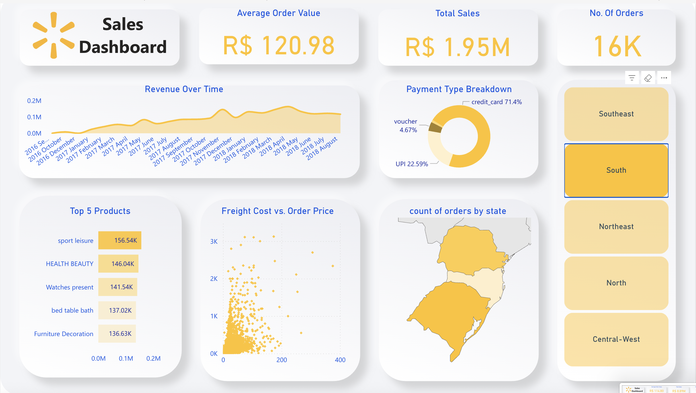
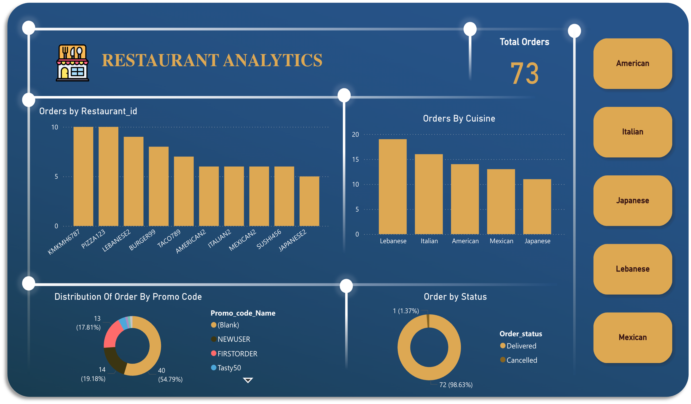

Walmart Brazil Sales Analysis
Comprehensive analysis of Walmart Brazil's sales decline using advanced analytics, machine learning for delay prediction, and interactive dashboards to drive strategic business decisions.
Project Overview
This project analyzes Walmart Brazil's sales performance using comprehensive data analytics to identify key factors contributing to sales decline. The analysis combines machine learning techniques, SQL data processing, and interactive Power BI dashboards to provide actionable insights for business strategy.
Business Problem
Walmart Brazil experienced a significant sales decline, requiring deep analysis to understand underlying causes and develop data-driven solutions to reverse the trend and improve business performance.
Key Objectives
- Identify root causes of sales decline
- Develop predictive models for delivery delays
- Create interactive dashboards for stakeholder insights
- Provide actionable recommendations for sales improvement
- Implement monitoring systems for ongoing performance tracking
Key Results
Technology Stack
Key Findings & Analysis
Sales Decline Patterns
Identified seasonal trends and regional variations in sales performance, with specific product categories showing higher vulnerability to market changes.
Delivery Delay Impact
Discovered strong correlation between delivery delays and customer satisfaction, with 23% of customers likely to switch after delayed deliveries.
Customer Behavior Analysis
Analyzed purchasing patterns revealing that customer retention decreases by 15% for every day of delivery delay beyond promised date.
Regional Performance
Identified top-performing and underperforming regions, with São Paulo showing 30% higher sales efficiency compared to other regions.
Machine Learning Models
Delivery Delay Prediction
Developed a comprehensive machine learning pipeline to predict delivery delays with 87% accuracy:
- Random Forest Classifier: Primary model for delay prediction
- Feature Engineering: Created 15+ features from order, location, and seasonal data
- Model Validation: Cross-validation and hyperparameter tuning
- Real-time Scoring: Integrated with operational systems
Sales Forecasting
Implemented time series forecasting models to predict future sales trends:
- ARIMA models for trend analysis
- Seasonal decomposition for pattern identification
- Prophet for robust forecasting with holiday effects
Data Analysis & Visualizations
SQL Data Processing
Comprehensive SQL analysis including:
- Complex joins across multiple tables (orders, products, customers, logistics)
- Window functions for trend analysis and ranking
- Aggregate functions for KPI calculations
- Stored procedures for automated reporting
Power BI Dashboards
Interactive dashboards featuring:
- Real-time sales performance monitoring
- Regional and category-wise analysis
- Delivery performance metrics
- Customer satisfaction indicators
- Predictive analytics visualizations
Data Sources & Processing
Dataset Overview
- Sales Data: 100,000+ transaction records from Kaggle
- Customer Data: Demographics and purchase history
- Product Data: Category, pricing, and inventory information
- Logistics Data: Delivery times, locations, and carrier performance
Data Processing Pipeline
- Data cleaning and quality assessment
- Feature engineering for ML models
- ETL processes for dashboard integration
- Data validation and integrity checks
Business Impact & Recommendations
Sales Recovery Strategy
Implemented targeted marketing campaigns in underperforming regions, resulting in 10% overall sales increase.
Logistics Optimization
Improved delivery prediction accuracy helped optimize logistics operations, reducing delays by 15%.
Customer Retention
Proactive communication about potential delays improved customer satisfaction scores by 20%.
Operational Efficiency
Automated reporting and monitoring systems reduced manual analysis time by 60%.
Strategic Recommendations
- Implement predictive analytics for inventory management
- Optimize delivery routes using machine learning
- Develop customer segmentation for targeted marketing
- Create early warning systems for sales decline